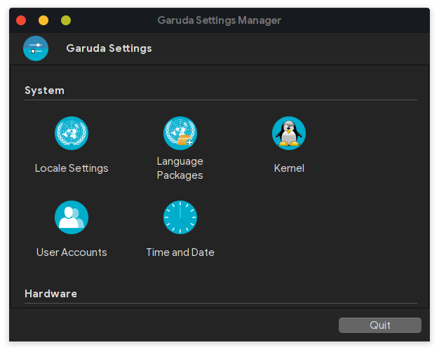
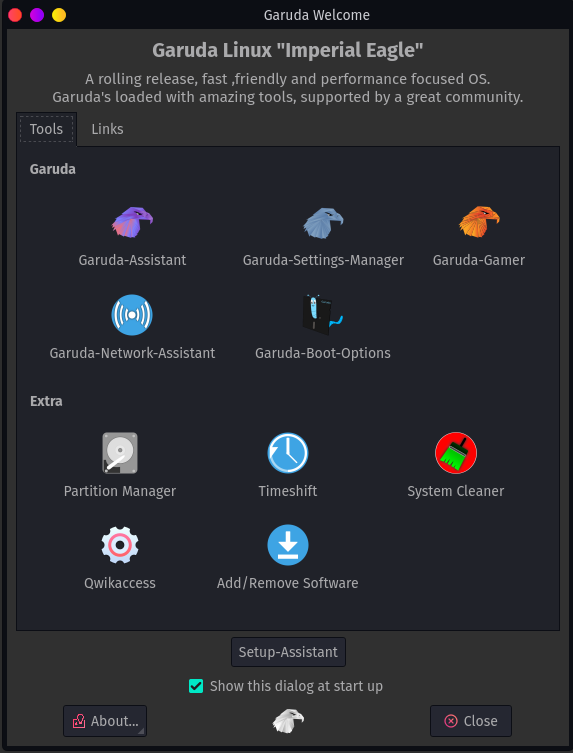
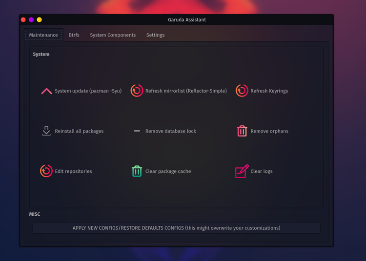
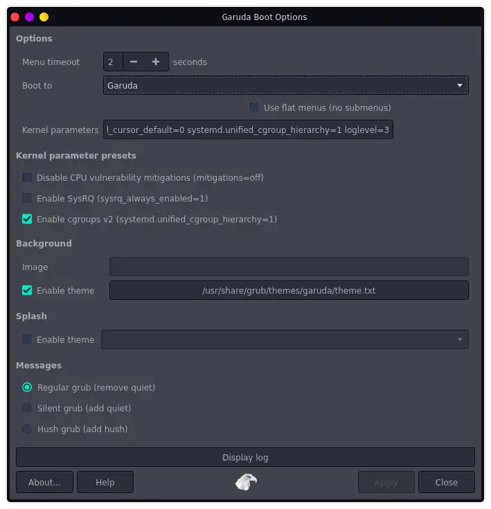
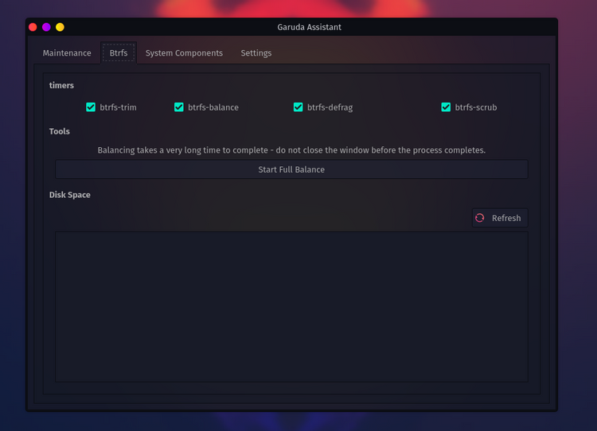
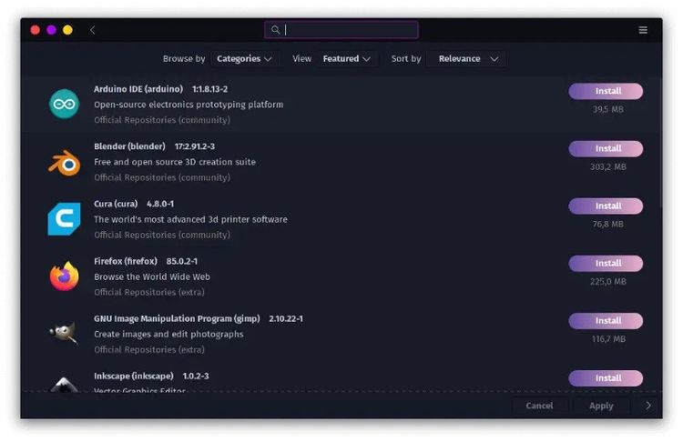
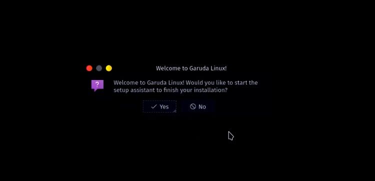
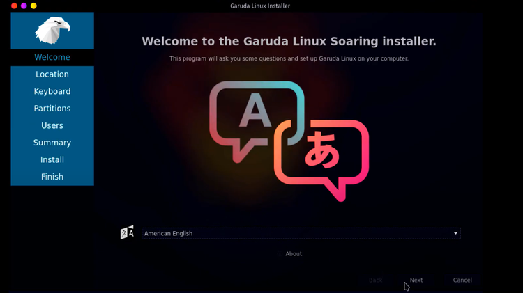

Installation Procedure
Boot the PC and press the manufacturers key to open the menus.
Reset BIOS to factory default and reboot.
Disable fastboot in BIOS settings.
Go to security > secure Boot and disable secure boot in BIOS settings.
Make sure that SATA controller is set to AHCI mode in BIOS settings.
If your firmware supports UEFI then set your BIOS settings to UEFI only.
Create a bootable USB using DD/Etcher/Ventoy, if using Rufus make sure to use DD mode to flash the iso to usb.
From the firmware menu boot to usb drive while in UEFI or BIOS mode:
You might see separate commands for the same device. For example, you might see UEFI USB Drive and BIOS USB drive. Each command uses the same device and media but boots the PC in a different firmware mode. We recommend to boot drive in UEFI mode if listed.
After booting live media start the installer and choose 'Erase Entire Disk' in the Calamares Installer.
Initial setup after downloading
The next initial setup after installing can make you proceed Garuda smoothly. Keep on reading! 😊
- Getting the initial mirrorlist
This step and the following can both be completed interactively if the setup assistant. Just press yes to the “complete installation” prompt.
If you chose now you have two possibilities: either you open "Reflector Simple" found in the startmenu if you prefer using a GUI or you open the terminal and type upd. This will refresh your mirrorlist and update the system afterwards.
- Updating the system
Here you can chose between GUI and terminal again. For the first option you have to open Pamac (also called software update) click update. If you prefer the terminal it is as easy as typing:
sudo pacman -Syu (or upd if you want to refresh mirrors first)
After a bigger update (especially if kernel versions changed) it is advised to reboot afterwards.
- Downloading languagepacks
Some applications such as Firefox ship its language packs in separate packages. This makes installing them after the initial setup a needed step. This is however made simple by using the Garuda settings manager. Open it up and get your language packs!

- Getting printing and scanning support, adblocking and more using the Garuda Welcome app
We made some settings easy for you and included them in the Garuda Welcome app. Here they can be turned on and off by toggling. To get an overview on the current available settings, have a look:

Recommendations
If you want to know how to install & setup Garuda Linux ,you should watch this short tutorial.
GUI
Garuda Linux is a rolling distribution based on arch Linux, focusing only on performance. But unlike arch, it comes with a graphical calamares installer and other advanced GUI tools.
GUI for managing drivers and kernels (Garuda Settings Manager)

GUI tool for various common tasks (Garuda Assistant)
This tool allows users to manage repositories, clear logs, back up the system, manage the filesystem and systemd processes in simple clicks.

GUI for GRUB boot options (Garuda Boot Options)

GUI for network assistance & hotspot creation (Garuda Network Assistant)

BTRFS as the default filesystem with zstd compression
Garuda Linux uses the B-Tree filesystem (BTRFS) as the default. BTRFS addresses various Linux filesystem limitations like checksums, pooling, and snapshots. It also allows for easy management, fault tolerance, and repairs.
Btrfs also provides Garuda Linux with the ability to perform self-healing by using checksums and metadata to detect and repair corrupted data. Therefore, Garuda Linux having BTRFS is a considerable advantage.

Garuda Gamer Tools
Garuda Linux has a Gaming edition (GUI for installing curated gaming software), a KDE version of Garuda Linux tuned for gamers. This Gaming edition has all the software a gamer might need. The pre-installed gaming software in the gaming edition of Garuda Linux includes Steam, Gamehub, Boxtron, WINE, Proton GE custom, Gamemode, vkBasalt, itch, Lutris, Minigalaxy, Heroic Game Launcher, Oversteer, and SteamTinterLaunch.
It also comes with gaming tools such as OpenRGB, KeyboardVisualizer, DisplayCAL, NoiseTorch, Discord, Mumble, Piper, and CoreCtrl.

Section Item 4.1
Vivamus efficitur fringilla ullamcorper. Cras condimentum condimentum mauris, vitae facilisis leo. Aliquam sagittis purus nisi, at commodo augue convallis id. Sed interdum turpis quis felis bibendum imperdiet. Mauris pellentesque urna eu leo gravida iaculis. In fringilla odio in felis ultricies porttitor. Donec at purus libero. Vestibulum libero orci, commodo nec arcu sit amet, commodo sollicitudin est. Vestibulum ultricies malesuada tempor.
Section Item 4.2
Vivamus efficitur fringilla ullamcorper. Cras condimentum condimentum mauris, vitae facilisis leo. Aliquam sagittis purus nisi, at commodo augue convallis id. Sed interdum turpis quis felis bibendum imperdiet. Mauris pellentesque urna eu leo gravida iaculis. In fringilla odio in felis ultricies porttitor. Donec at purus libero. Vestibulum libero orci, commodo nec arcu sit amet, commodo sollicitudin est. Vestibulum ultricies malesuada tempor.
Section Item 4.3
Vivamus efficitur fringilla ullamcorper. Cras condimentum condimentum mauris, vitae facilisis leo. Aliquam sagittis purus nisi, at commodo augue convallis id. Sed interdum turpis quis felis bibendum imperdiet. Mauris pellentesque urna eu leo gravida iaculis. In fringilla odio in felis ultricies porttitor. Donec at purus libero. Vestibulum libero orci, commodo nec arcu sit amet, commodo sollicitudin est. Vestibulum ultricies malesuada tempor.
Methods
While there are many potential reasons why your installation doesn’t boot to a desktop, the primary reason is that the graphics drivers haven’t loaded correctly so your login/display manager (DM) doesn’t start. This is why you get a "black screen" or stuck at an
[ OK ] Started some service
message.
The normal reason for this is that you have the incorrect driver version for the kernel. This can happens when the mirror you are updating from is not fully synchronised, or times out, and so you have different sets of packages in [core]and [extra]. This means the driver module package in [extra] has been built for a different kernel point-release to that in [core] .On the other hand, if you have a DKMS driver package then make sure the build succeeded!
Try to solve it
The first thing to try
Switch to a text console with CTRL+ALT+F2 , log in with your normal username and password, then run a full update:
sudo reflector -a6 -f5 --save /etc/pacman.d/mirrorlist
sudo pacman -Syyu
The first command will refresh your mirror list, picking five of the most recently updated mirrors (so those mirrors will all be up-to-date).
The second command will force a download of the current package lists, then perform an update if any updated packages are available.
If any packages were updated, reboot.
Note
If you can’t log in to a text console, use a chroot 46 instead.
The second thing to try
Log into a text console as above and run startx . This should either start X, in which case the issue lies with your Display Manager (e.g. GDM, LightDM, SDDM), OR you will be presented with some output and returned to the console. Of particular interest are Error (EE) lines.
The DKMS thing to try
Run
sudo dkms autoinstall
and pay attention to the build completion status. If it says the build failed then check the associated log file (it will tell you a file location).
If you can’t see anything obvious
If none of the above helps fix this issue (which the first one will in 90% of cases) then search all Arch OS related forums for recent issues (Search results for 'black screen' - Garuda Linux Forum) , and, if you can’t find anything, start a new thread mentioning what you have already tried.
Section Item 5.3
Vivamus efficitur fringilla ullamcorper. Cras condimentum condimentum mauris, vitae facilisis leo. Aliquam sagittis purus nisi, at commodo augue convallis id. Sed interdum turpis quis felis bibendum imperdiet. Mauris pellentesque urna eu leo gravida iaculis. In fringilla odio in felis ultricies porttitor. Donec at purus libero. Vestibulum libero orci, commodo nec arcu sit amet, commodo sollicitudin est. Vestibulum ultricies malesuada tempor.
Section Item 6.1
Vivamus efficitur fringilla ullamcorper. Cras condimentum condimentum mauris, vitae facilisis leo. Aliquam sagittis purus nisi, at commodo augue convallis id. Sed interdum turpis quis felis bibendum imperdiet. Mauris pellentesque urna eu leo gravida iaculis. In fringilla odio in felis ultricies porttitor. Donec at purus libero. Vestibulum libero orci, commodo nec arcu sit amet, commodo sollicitudin est. Vestibulum ultricies malesuada tempor.
Section Item 6.2
Vivamus efficitur fringilla ullamcorper. Cras condimentum condimentum mauris, vitae facilisis leo. Aliquam sagittis purus nisi, at commodo augue convallis id. Sed interdum turpis quis felis bibendum imperdiet. Mauris pellentesque urna eu leo gravida iaculis. In fringilla odio in felis ultricies porttitor. Donec at purus libero. Vestibulum libero orci, commodo nec arcu sit amet, commodo sollicitudin est. Vestibulum ultricies malesuada tempor.
Section Item 6.3
Vivamus efficitur fringilla ullamcorper. Cras condimentum condimentum mauris, vitae facilisis leo. Aliquam sagittis purus nisi, at commodo augue convallis id. Sed interdum turpis quis felis bibendum imperdiet. Mauris pellentesque urna eu leo gravida iaculis. In fringilla odio in felis ultricies porttitor. Donec at purus libero. Vestibulum libero orci, commodo nec arcu sit amet, commodo sollicitudin est. Vestibulum ultricies malesuada tempor.
Recovery Options
As a rolling release, Garuda Linux updates software packages daily. Unfortunately, doing such updates might cause your system to break, making it inoperable.
To mitigate this, Garuda Linux has an inbuilt Timeshift backup utility that allows you to take snapshots of your system. In addition, Garuda gives you access to the system snapshots straight from GRUB, which can prove immensely helpful in cases where the system fails to boot up successfully.

Easy Software Installation
Installing software packages on Garuda Linux is as simple as it can get. The distro uses the Pacman installer and a collection of software packages from the default repositories.
Garuda Linux also imports the Pamac installer from Manjaro Linux, allowing you to install software packages without touching the terminal.
Garuda Linux also offers support for Snap and Flatpack and comes with the Arch User Repository enabled by default.
NOTE: Although supported, Garuda Linux does not recommend using Snap packages.

Awesome User Experience
Once you install Garuda Linux, a welcome screen will greet you with a warm and straightforward message welcoming you to Garuda Linux. This screen also gives you the option of using the setup assistant to configure your system for the first time.
Garuda Linux provides rich UI features with familiar navigation menus and icons. As a result, exploring Garuda Linux is straightforward.
Depending on the flavor of Garuda Linux you install, you will get typical applications such as Firefox web browser, VLC media player, a terminal, GIMP, Steam, Timeshift Backup utility, and Software Market pre-installed.
The default username and password are Garuda and Garuda, respectively.

Easy-to-Use Calamares Installer
Although Garuda Linux is an Arch-Linux-based distro, it uses the Calamares installer, which removes the complexity and time-consuming procedure of installing Arch-based distributions

Garuda Linux General FAQ
The Website is the official thread for Garuda Linux FAQ.
View it
Configuration,Settings, Installation etc
How to easily create a bootable USB to install Garuda?
Answer
How to fully use Intel hardware ?
This guide can help you.
How to chroot Garuda Linux?
View Guide
How to fix system time when dual booting with Window?
Read and adjust as you prefer. It is suggested to configure Windows time to UTC.
System time
Section Item 9.3 (FAQ Category Three)
How to dapibus sollicitudin justo vel fermentum?
Donec sodales sagittis magna. Sed consequat, leo eget bibendum sodales, augue velit cursus nunc, quis gravida magna mi a libero. Fusce vulputate eleifend sapien. Vestibulum purus quam, scelerisque ut, mollis sed, nonummy id, metus. Nullam accumsan lorem in dui.
How long bibendum sodales?
Fusce vulputate eleifend sapien. Vestibulum purus quam, scelerisque ut, mollis sed, nonummy id, metus. Nullam accumsan lorem in dui.
Where dapibus sollicitudin?
Aenean et sodales nisi, vel efficitur sapien. Quisque molestie diam libero, et elementum diam mollis ac. In dignissim aliquam est eget ullamcorper. Sed id sodales tortor, eu finibus leo. Vivamus dapibus sollicitudin justo vel fermentum. Curabitur nec arcu sed urna gravida lobortis. Donec lectus est, imperdiet eu viverra viverra, ultricies nec urna.